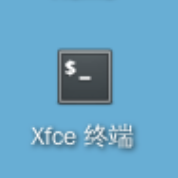
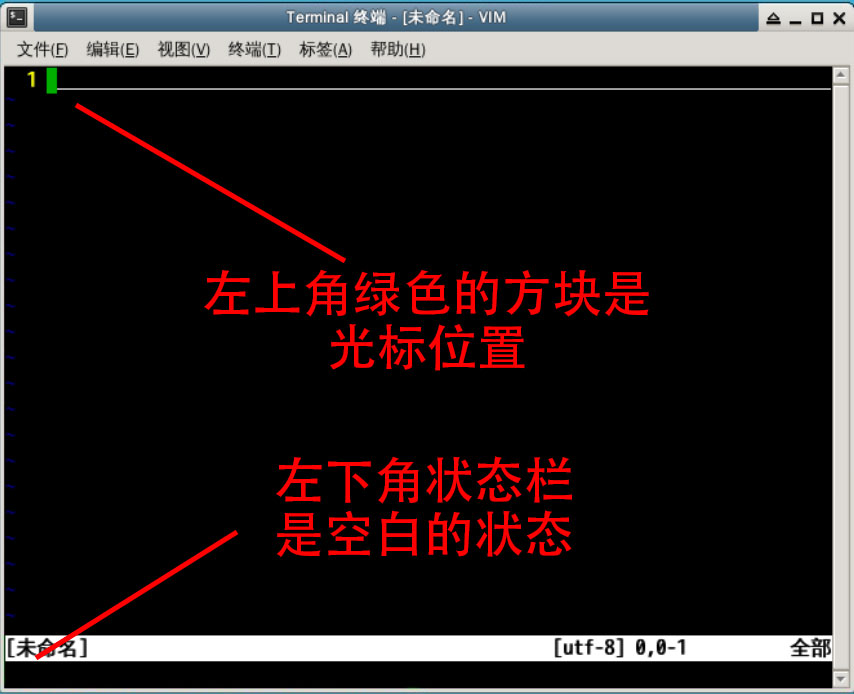
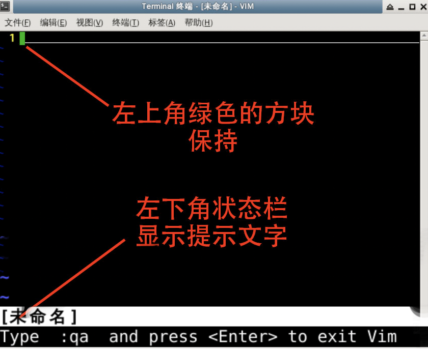
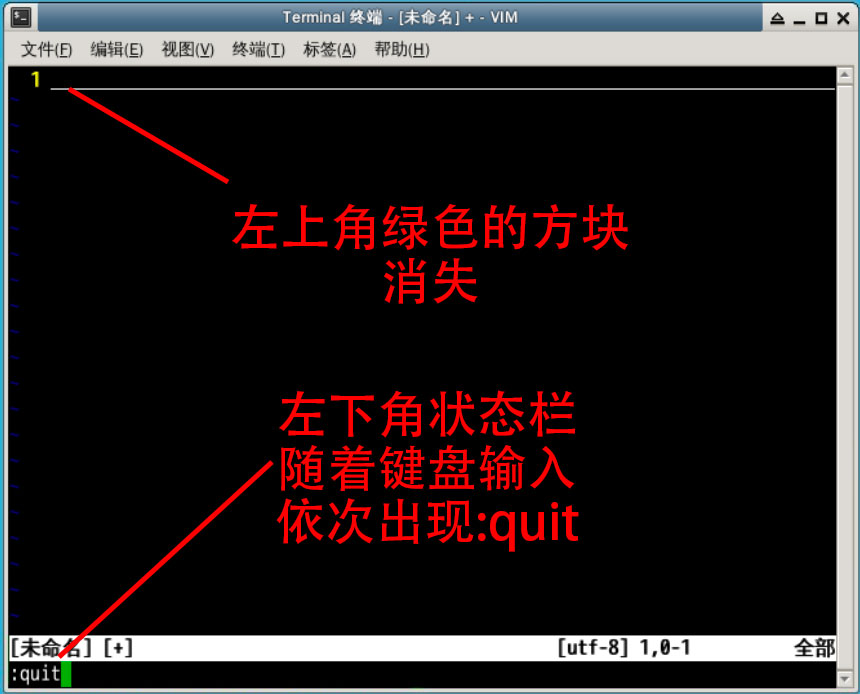
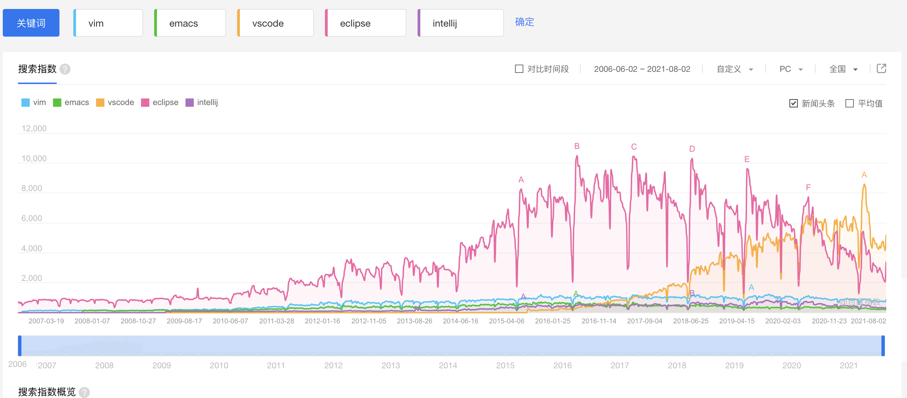
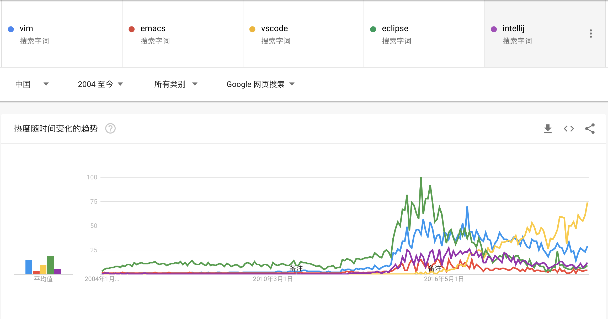
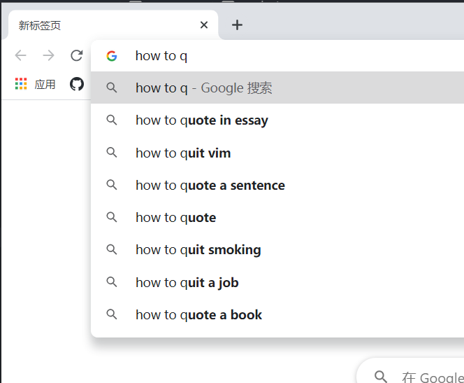

vim 是什么vim 是类 unix 系统上的一个文本编辑神器，在 Linux 系统环境中也被许多程序员使用，书写程序和文档。
我们本次课程将围绕 Vim 进行全面的介绍及学习。
vim 在环境中，已经默认安装好了，我们可以直接使用。在使用前，我们先对它进行升级，升级后会有更好的功能体验。
下面打开终端

#首先是更新源
sudo apt update
#然后是升级vim
sudo apt install vim
在升级完成后，我们再通过命令运行 vim。
vim
vim 的基本界面
vim 默认的模式 是 Normal mode(正常模式)
:qa<Enter> :是半角的vimvim:quit: 时，输入的内容显示在屏幕的左下角: 的输入，让 vim 的模式从 Normal mode（正常模式），变成了 Command-Line mode（命令行模式）Normal mode（正常模式）: 的输入让左上角的绿色光标消失:qa 后，按 回车 执行这个 :qa 命令:qa 命令shell


